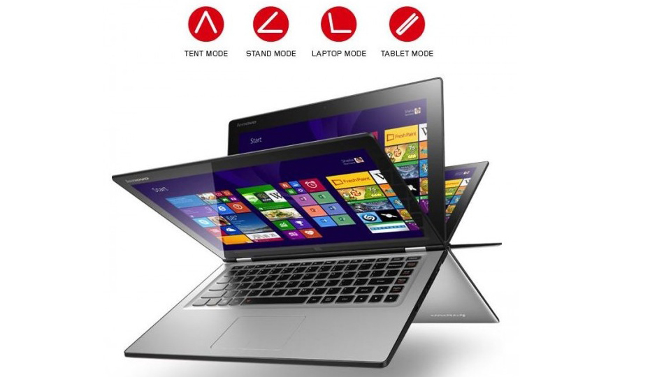

Sushrit Pasupuleti
Coder | Blogger | Speaker | Sketcher | Entrepreneur... err 🤔 and more 🙃
Hey there, it's Sushrit. I'm an AI enthusiast, come join me on my AI adventures, as I take apart various AI topics, work on some exciting projects, provide solutions to some of the world's problems (well atleast user level) and more.With a few fun little explorations every now and then.

Fun Facts
Here's a look at my origins, as a techie, speaker, coder, what have you...
Techie Firsts
Inspiration
As a kid, I watched a whole lot of superhero movies. And Iron Man was the one that got my attention. I don't remember when it all started, but before I knew it, I wanted to be like him. So I started off by downloading some AC/DC mixes.
What next ? Well, I wanted my own cutting edge AI butler ofcourse, so I set out to build my own JARVIS. Something you'll hear more off down below. I started off with C#, which I picked up from The New Boston. From there, it was a long journey, building, tinkering, hacking, and most of all learning. And now Blogging as well...
First Computer
Well I don't remember my first PC that I got started on, I used a bunch of computers, but the one PC that I chose, after having researched for weeks was a Lenovo Yoga 2 13. Not exactly a workhorse for the money I spent on it, can't blame the "360 Degree Hinge" trend that had just begun, for wooing me either. It was irresistible 'cause it was something very uncommon and new. So I jumped for it
{kind=link}
I spent days trying to find the right fit for it to justify all of it's gimmicks, but it ended up becoming a docked laptop connected to a bunch of monitors and perripherals in the end. It was a great experience, to whip it out and go full Star Trek like wherever I went with it.
First Project
Like I stated before, my obsession with Iron Man drove most parts of my life as an enthusiast.SAM was born out of this desire, At first it was an inhouse tool for me to show off, hidden behind a console window, coded using Batch Scripts. But then, I moved slowly into windows forms, added all the flair I could, and when I exhausted that moved to WPF. When I got feedback from my users, I decided to pursue Material Design, as I found the UI design to be far too complex for the average user. This is where I learnt that not everyone shared my love for holographic displays just yet.

In time, when my Natural Language Processor implimentation in C# felt weak, I ventured deeper, and found Machine Learning. Here I made a giant leap, I switched languages for the 1st time in years. I learnt Python from sentdex decided to work on mobile apps, something I always avoided #PCMasterRace, to reach a wider audience. Even learnt web technologies, then slowly ran into frameworks like Flask, Django, React and so on, all of which have made be super handy.
Iron Man changed me from just a regular closet fanboy to a completely different kind of nerd.
Projects
Well everything was linked to Iron Man in someway 😂
There's so much I've gotten my hands dirty with lately.
SAM (Smart Assistance And Management
Well, I just had to find a unisex name like Siri had going for it, so I chose the lousiest one of them all.
Apart from growth as a programmer/enthusiast, I even grew to appreciate the management side of things, trying to be more organized and professionsal.
It was with SAM that I decided to get into Social Networking Promotions, made a Facebook Page, a Youtube Channel , and a Blog. I started learning to edit videos, photos, write blog posts, promotional material, and what not. Working on SAM really did make me a whole another person.
I've open sourced the Project finally, and have big plans in mind, so be sure to check it out if you're into AI, Chatbots and the like.
A theoretical Arc Reactor!
Arc Reactor, more Iron Man 😂, well if I had to build an Iron Man suit, I would totally need an Arc Reactor. So, I began theorizing my own version of the Arc Reactor. Using some inspiration from the movies, I chose to go after certain isotopes of Paladium. It's all sciency, with quantum teleportation and what not. Let me know if you want me to write a blog post about it .

Tesla Electric Meter (Smart Electric Meter)
In High School, along with a friend I worked on a project for the CBSE National Science Fair, which would take us to the Nationals.
Well, it wasn't anything fancy in the beginning. It was just a regular electric meter with a Frankenstiend Arduino fitted into it so that it could get all the readings. The initial plan was to send this data over to the user's phone via SMS. Then, slowly an app was put together, where one could find not just their daily power consumption, but other statistics like usage patterns, their carbon footprint and a bunch of graphs for the Statistics fans.
That was my first time integrating hardware and software together. It led to a whole lot of Arduino and Raspberry Pi adventures. Including a car that can drive itself without crashing into stuff (not a self driving car though).
Braggi
One thing I realized while working on SAM was that, by the time I was done building one iteration of my app, the competition had already made a huge breakthrough. While I was busy creating my own Scripting Language to Cover up for the flaws in existing solutions, Siri, Cortana and Google Assistant had moved into large scale API integrations and hardware integrations, soon Google Duplex came into the picture.
It was then that I realized, that no matter how good a coder I was, I wouldn't be able to build everything by myself, and without much discussion with other coders. So I decided to finally go ahead and Open Source the core technologies that drove SAM, namely the Natural Language Processing Engine I had build from scratch, 'cause I had this strange aversion for APIs and other 3rd Party Packages. All of them, now implimented in sweet Python.
I've been working on a Django-rest-framework, to serve as the backend. And a ReactJS/React Frontend implimentation in mind, to get this thing going, and a whole lot of ML models to experiment with. Lots of cool concepts, like WebViews integrated into chat bodies, and possibly revolutionizing user interfaces as we know it, the Iron Man way...
Be sure to check my GitHub Repo, and if you're into it, feel free to be a part of this...
Favourites
Well, you gotta draw inspiration and motivation from something right ?
Favourite YouTubers
Siraj Raval
Linus Tech Tips
Corey Schafer
3Blue1Brown
Sentdex
Newspapers? Pfft not even once..
Favourite Platforms
Khan Academy
Coursera
Reddit
Stack Exchange
You gotta do something when you ain't crushing it, am I right ?